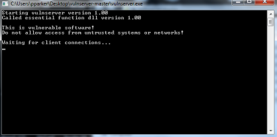
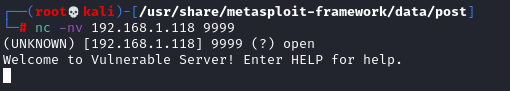
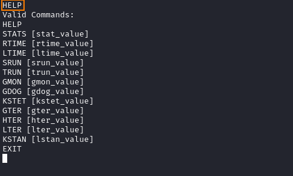

connect with netcat
To demonstrate the Buffer Overflow we will use this vulnerable
service:
https://github.com/stephenbradshaw/vulnserver1. Run
the vulnserver.exe on a Windows machine as Administrator
2. Run Immunity Debugger on the same machine as Administrator and attach to
the vulnerable service by: File → Attach
◇ It will opened as “paused” we need to run it with “Run Program”
button
Connect to the vulnerable service
 To copy files from Target to Local
machine:
https://pencer.io/ctf/ctf-thm-bofprep/